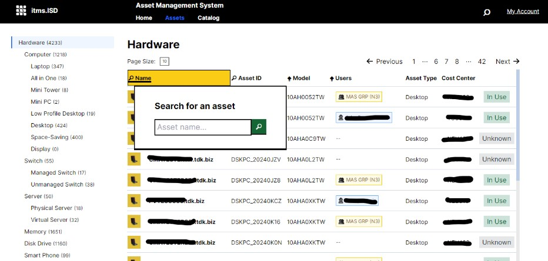
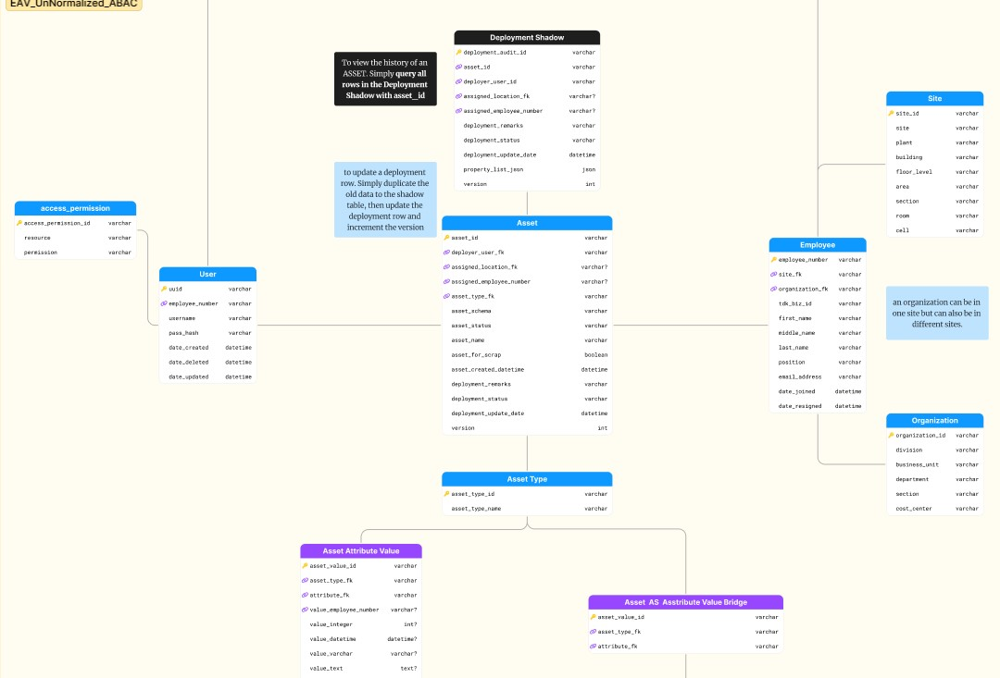
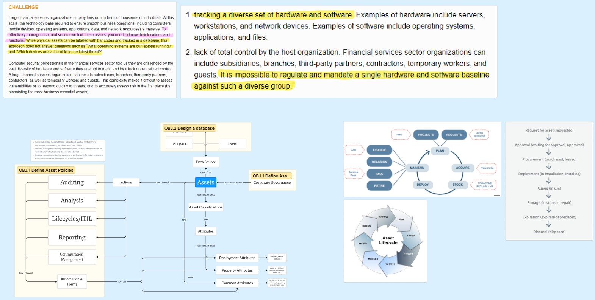

What I've done for my CS Practicum in TDK Philippines Corporation
developed software, cleaned data, designed databases, and more...
TDK started with ferrite cores. TDK Philippines Corporation (TPC) specializes in inductors, HDD heads, sensors, and stabilizers. The Information Systems Department of TPC manages essential systems for production, HR, and IT, focusing on infrastructure and development.
During my OJT at TDK Philippines, my primary objective was to address
critical
inefficiencies in data management practices within the IT
department, identified through initial data gathering and interviews.
This guided the focus of my
assignments...
Software Engineering & Data Migration
So what were the results?
A prototype Asset Management System

The prototype asset management system is designed to streamline asset
tracking and management processes. It features capabilities such as
comprehensive asset inventory management, lifecycle tracking of assets
from acquisition to disposal, and data migration to facilitate a
smooth transition from existing Excel systems.
The system includes
basic reporting tools to analyze asset usage and status, and a
user-friendly interface with customizable views for easy navigation.
Although still non-functional, this prototype lays the groundwork for
future development and enhancements.
An EAV database consisting of current IT assets of ISD

The Entity-Attribute-Value (EAV) database model supports flexible data
management by efficiently storing various asset attributes in a
structured format. This design allows for easy scalability and
adaptability as new asset types or attributes are introduced.
I have
successfully completed data migration from existing Excel systems such
as PCs and servers to the EAV database, ensuring a seamless transition
and preserving data integrity. This migration process has laid a solid
foundation for the asset management system, enabling more efficient
data handling and reporting in the future.
A case study to improve ISD's asset management practices

The case study aims to improve the Information Systems Department's
(ISD) asset management practices by identifying inefficiencies and
proposing solutions. It analyzes current workflows, data management
challenges, and user needs to develop a more effective asset
management system.
By addressing these challenges, the study seeks to
enhance operational efficiency, streamline data processes, and ensure
better tracking and reporting of IT assets, ultimately supporting
future development of a software tool for an asset management system.
What I learned
- Blazor and .NET Development: During my OJT, I gained extensive hands-on experience in using Blazor and .NET for building interactive web applications. This framework allowed me to create responsive user interfaces and implement complex functionalities efficiently. I learned about the lifecycle of Blazor components and how to manage state effectively within the application. Additionally, the integration with .NET provided a robust backend framework that streamlined development processes. Overall, this experience significantly enhanced my web development skills and confidence in using modern technologies.
- Database Design and Oracle SQL: I developed a solid understanding of database design principles while working with Oracle SQL. This involved creating efficient schemas that support various data relationships and ensure data integrity. I learned to write complex queries to retrieve and manipulate data effectively, which is crucial for any application. Moreover, designing databases with scalability in mind prepared me for future projects that may require additional features or modifications. This experience was invaluable in enhancing my technical capabilities in database management.
- Data Migration: A significant part of my project involved migrating data from Excel to a structured database, which required careful planning and execution. This process highlighted the importance of data accuracy and integrity during transitions, as any errors could lead to major issues later on. I developed scripts to automate parts of the migration, ensuring a smoother and more efficient transfer of information. Through this experience, I gained insights into data mapping and transformation techniques essential for successful migrations. Ultimately, this reinforced the importance of thorough data handling practices in any IT project.
What I realized
- Documentation is Key: Throughout my internship, I realized the critical role documentation plays in the success of any project. Thorough documentation facilitates better understanding among team members, ensuring everyone is aligned with the project goals and processes. It serves as a valuable resource for future reference, helping new team members onboard more efficiently. Furthermore, well-maintained documentation aids in tracking changes and decisions made throughout the project lifecycle. Ultimately, this realization emphasized the need for consistent documentation practices in all my future endeavors.
- Focus on Non-Coding Tasks: I came to understand that dedicating a significant portion of my efforts to non-coding tasks is essential for successful project outcomes. This includes activities such as planning, designing, and refining processes, which are often just as important as actual coding. Investing time in these areas helps to identify potential challenges early on and ensures a smoother development process. Additionally, this focus contributes to the overall quality of the final product, making it more robust and user-friendly. This realization has reshaped my approach to project management and execution.
- Solidify Processes First: One of the key insights I gained is the necessity of solidifying processes before entering the development phase. Establishing clear and well-defined processes helps avoid complications and sets a solid foundation for the project. It ensures that all stakeholders are on the same page and reduces the likelihood of misunderstandings later on. By having robust processes in place, the development team can work more efficiently and effectively towards common goals. This understanding will significantly influence my approach in future projects.
Conclusion
In reflection, my On-the-Job Training at TDK Philippines Corporation has been a pivotal period of growth, both professionally and personally. Mastering technologies such as Blazor and Oracle SQL while refining project management and prioritization skills has been instrumental in my development.
Realizing the significance of effective self-management and setting attainable goals has provided valuable lessons in time management and productivity. Moreover, comprehending the complexities of database design and the practical benefits of leveraging existing tools in software development has broadened his perspective on industry best practices.
Encountering challenges, such as underestimating project scopes and grappling with overthinking, has imparted invaluable insights into overcoming obstacles and adapting to evolving project demands. These realizations have not only strengthened my technical proficiency but also equipped him with essential soft skills, such as communication and teamwork.
Looking forward, the trainee is eager to apply these learnings in future endeavors, confident that they will serve as a solid foundation for his career aspirations in software development and IT operations. My OJT experience at TDK Philippines Corporation has prepared me to navigate the dynamic and demanding landscape of technology with resilience and innovation, ready to tackle new challenges and contribute meaningfully to future projects.
Want to know more? Explore these resources.